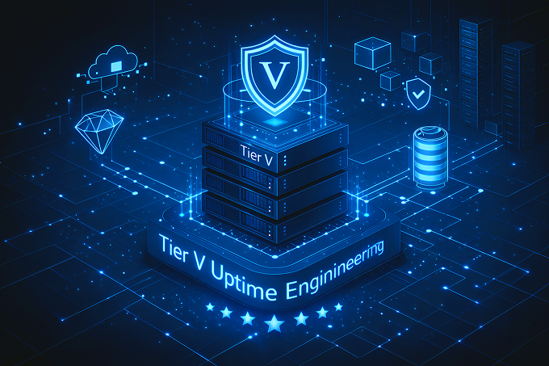

Tier V Uptime Engineering.
Beyond Certification. Beyond Redundancy. Beyond Downtime.

Tier V Uptime.
Tier IV defines the highest certified level of data-center availability.Tier V defines something else entirely: the elimination of failure as a business event.
Crafthost engineers and operates infrastructure using Tier IV facilities combined with Tier V engineering principles to achieve continuous availability without interruption, even during maintenance, component failure, human error, or unexpected external events.
This is not an SLA promise.
This is uptime as an architectural outcome.
Why Tier IV Alone Is Not Enough.
Tier IV certification guarantees concurrent maintainability and fault tolerance within a single facility.
It does not guarantee:
- Immunity from cascading failures
- Protection against human or operational error
- Continuity during multi-system maintenance windows
- Business continuity across regional, network, or control-plane incidents
Most “Tier IV” platforms still experience downtime because Tier IV is a facility standard — not a system design philosophy. Tier V exists to close this gap.
What Tier V Means at Crafthost.
Tier V is not a marketing label.It is a multi-layer engineering methodology applied across facilities, regions, control planes, and operational processes.
Tier V uptime is achieved by designing systems that:
- Continue operating during failure, not merely recover from it
- Eliminate maintenance as a downtime event
- Isolate faults before they propagate
- Assume failure is inevitable and neutralize its impact

Tier IV prevents downtime within a site. Tier V prevents downtime across the system.
Tier V Design Principles.
How Tier IV and Tier V Work Together at Crafthost.
Together, they form a platform engineered to deliver 100% operational uptime for mission-critical workloads — not by avoiding failure, but by making failure irrelevant.
Crafthost does not replace Tier IV — it extends it.
Tier V vs Traditional High-Availability Models.
Use a visual HTML table or CSS cards on the live page.